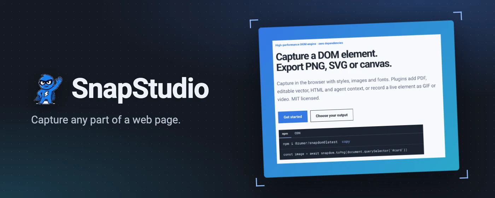
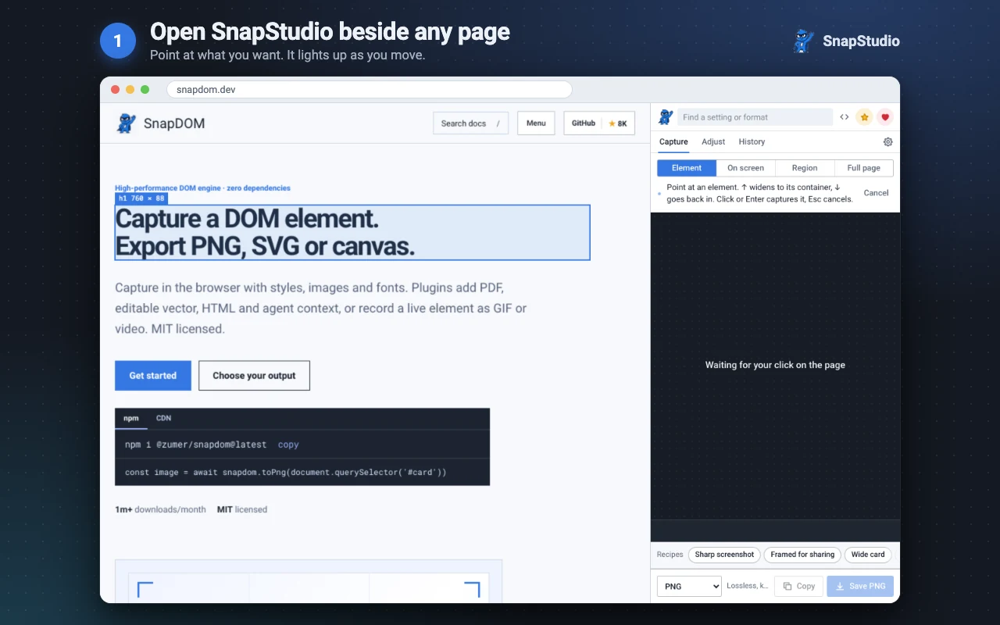
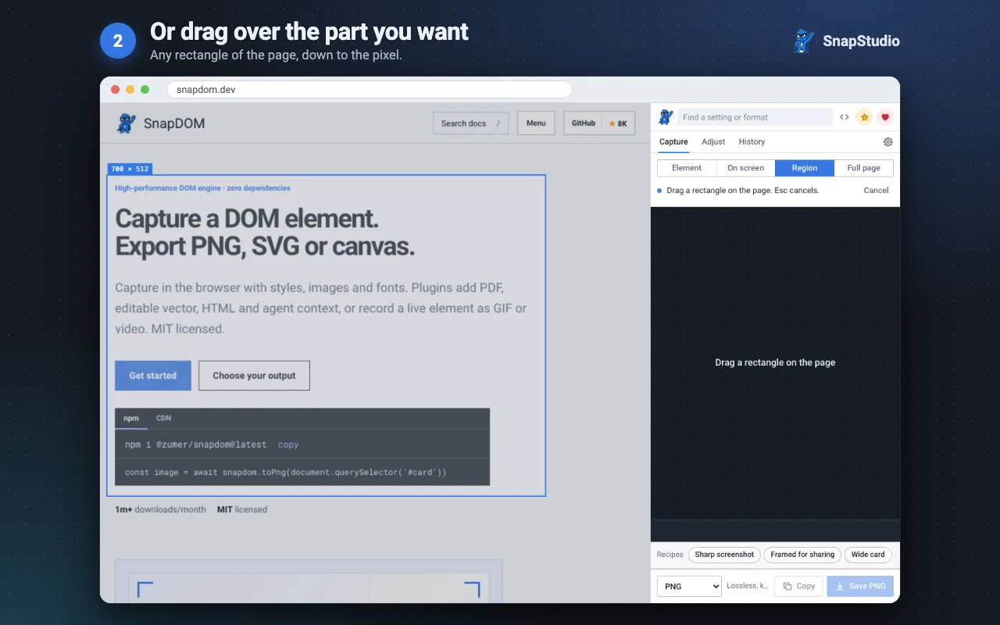
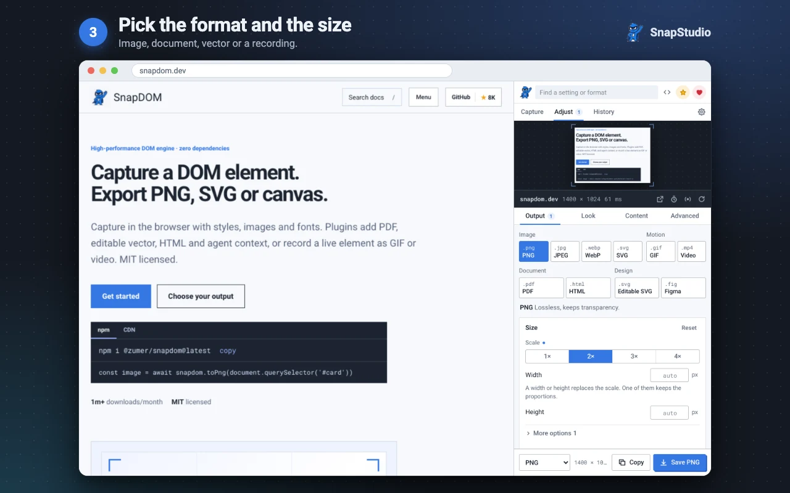
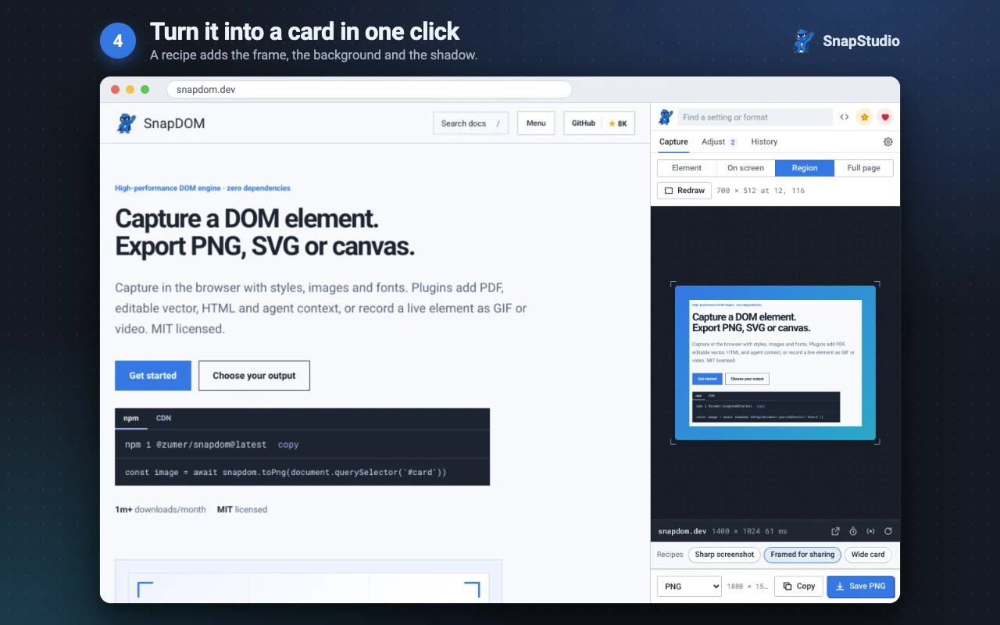
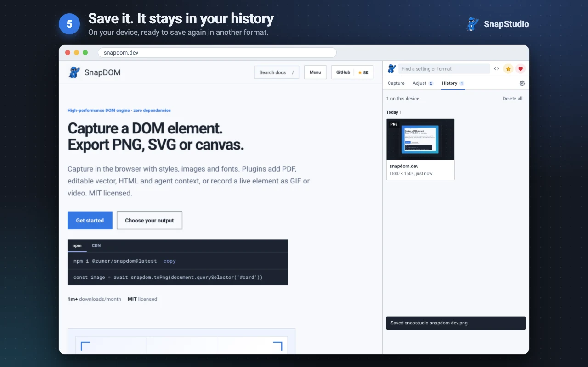

Capture any part of a web page, without writing code.
SnapStudio is the official browser extension of SnapDOM. Click what you want on any page, choose an output and save it. The capture is made inside your browser by the same engine this site documents.
Add to ChromeFree. No account. Nothing is uploaded.

How it works

1 · Open it beside the page
The panel opens next to the page and the picker follows the pointer.

2 · Pick what you want
One element, a region you drag, what is on screen or the full page.

3 · Choose the output
An image at up to 4×, a PDF, an editable SVG, Figma layers, a GIF or a video.

4 · Turn it into a card
A recipe adds the frame, the background and the shadow in one click.

5 · Save or copy
The file is saved, and History keeps it so you can get it again.


Alt + Shift + S opens SnapStudio from the keyboard. It needs Chrome 116 or newer.
What you can do
- Capture one element, a region, what is on screen or the full page. While picking, the up arrow moves to the parent element.
- Export PNG, JPEG, WebP or SVG; a PDF with selectable text and working links; HTML with its styles; an editable SVG or a paste into Figma; a GIF or a video recorded while you use the page.
- Tidy up first: leave elements out by clicking them, add a frame, apply a filter, stamp the date, replace text, or mask what was typed in form fields.
- Recipes are complete setups for common jobs, and you can save your own. The search box finds any setting by name.
- Timed capture waits so you can open a menu or a tooltip before the picture is taken.
- History keeps what you copied or saved, on your device, and saves it again in another image type.
From a capture to code
The <> button shows the current capture as SnapDOM code, with the options and plugins you chose, ready to paste into your project. Set a capture up by hand in the panel, then keep it as a call to the API with the same plugins.
Privacy and permissions
SnapStudio collects no data. It has no server, no account and no analytics; your settings and recent captures stay on your device.
It gets access to a tab when you click its icon there, and only there. “Allow on every site” is optional: it keeps the panel working when the tab moves to another site, and lets captures include pictures hosted on other sites.